The  icon denotes a
command component.
icon denotes a
command component.
The Tcl Dev Kit Cross Reference Tool (XRef) is a graphical browser that maps out the structure of a Tcl program and helps make complex code more understandable. The XRef tool scans Tcl source code, and then builds a cross-referenced database showing you the relationships among Tcl code components. These components include packages, files, namespaces, commands, and variables. Each Tcl component is presented in a tree hierarchy that can be expanded to display where the code is defined, declared, used, and located.
The XRef tool is useful for building, debugging, and maintaining Tcl code. For example, when changing a variable definition, use the XRef tool to identify the files and commands where the variable is declared, and then update them to the new variable definition.
The Tcl Dev Kit Cross Reference Tool can be used to extract Tcl component information from programs and packages contained in TclApp (or Prowrap) projects, Tcl Dev Kit Package definitions (".tap" files), and from Komodo project files.
Cross Reference Tool features include:
The XRef BWidgets demo uses the Cross Reference Tool to extract component information from the BWidgets package. See the XRef BWidgets Demo for more information.
This section lists the platforms and Tcl versions that the Tcl Dev Kit Cross Reference Tool supports. It then describes how to start the tool and provides a tour of the main window.
The Tcl Dev Kit Cross Reference Tool works with Tcl version 8.4 or greater.
The Cross Reference tool is an application that builds a database of program components, including packages, files, namespaces, commands and variables.
Windows
tclxref.exeUnix
tclxrefNote: When using the command line to start the XRef tool, you can specify the filename of a database to load. See Opening a Database for more information.
The Cross Reference Tool explorer window consists of the following components:
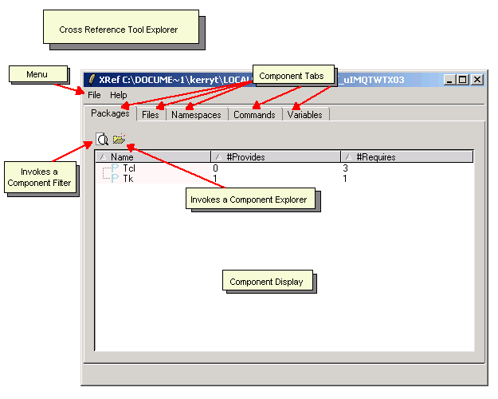
Note: To change the font size displayed in the
Cross Reference Tool Explorer, press Ctrl-plus to increase the font
size or Ctrl-minus to decrease the displayed font size. If using
Windows with a mouse wheel, you can alternatively press the Ctrl
key and then rotate the mouse wheel to increase or decrease the font size
displayed in the Cross Reference Tool Explorer.
The menu contains File and Help content.
The component display lists the scanned component data. Where applicable, component data is displayed in expandable hierarchical lists. Each list can be drilled down, using expanding and collapsing tree nodes, to display the commands and variables associated with a particular component.
The Cross Reference Tool displays Tcl program component types on individual tabs. Each tab presents the same scanned database content in a different view, depending on the component tab selected. For example, the Files tab shows the components used and defined within a particular file. These file components could include: namespaces, commands, variables, and packages. The Commands tab, however, provides a narrower view of the scanned database as only the lower-level variables associated with a particular command are displayed. By switching between these two component tab views, you gain a higher or lower-level understanding of any Tcl source component. The component tabs include:
Each component tab has a unique filter that limits the number of components listed in the display window. Component Filters are opened from any component tab using the Filter button. Each filter can be configured to find exact matches, and to perform glob-style matching (using the asterisk (*) to match any sequence of characters and a question mark (?) to match any single character). When configured, only elements matching that pattern are displayed.
Note: Only top-level nodes of a hierarchical list are filtered. Node children are not filtered.
XRef Component Explorers focus on the low-level details of a single component. An XRef Component Explorer is invoked from any component tab using the Open 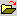 button. Each component tab launches a unique component explorer interface to view the specifics of the selected component.
The Component Source Code Viewer is only applicable to those without an ActiveState Komodo installation. The XRef Component Source Code Viewer displays scanned source code on systems without a Komodo installation. If Komodo is installed, all component source code is loaded in Komodo and the Component Source Code Viewer is never invoked.
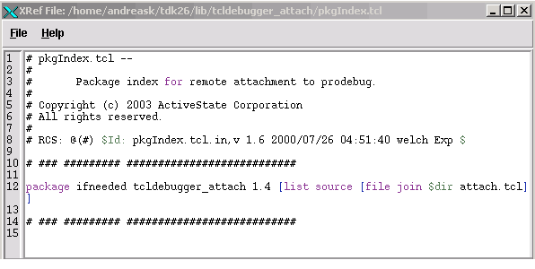
The Packages tab displays the Tcl packages that are
used and defined within the scanned Tcl source code. The
#Provides and #Requires columns
display the number of times each package is used within the database.
The #Provides column indicates the
total number of times the scanned source files contain a require
statement for a selected package. The #Requires column
lists the number of packages that a selected package uses.
Click a column title to sort package content in ascending or descending order.
The current sort column selected is shaded pink.
The icon denotes a package component.
To filter packages:
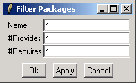
Use the Open button to view details on a particular package, such as the name of the file where a required statement calls the package. Opening a package's details invokes an XRef Package Explorer window, which displays lower-level code details specific to the package selected. To open a package's details in an XRef Package Explorer window:
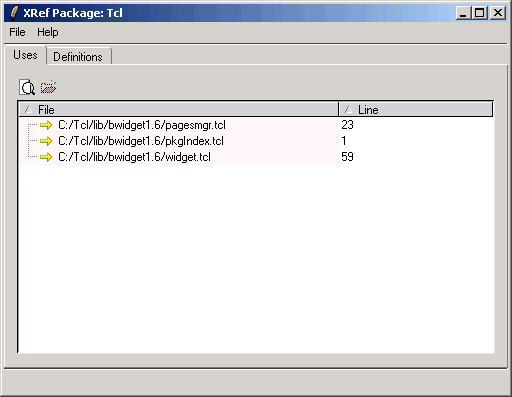
The XRef Package Explorer displays the files that are used and defined within the selected package component. Toggle between the Uses and Definition tabs to view what files are used and where those files are defined. The File column lists all files the package uses or defines. The Line column provides the source-code line number. This combination of XRef Package Explorer tabs and columns are useful for obtaining very low-level details on the file where the package is required.
It is possible to invoke numerous XRef Package Explorers while inspecting the scanned database. To continue exploring package file details, click the Open button once again. The total number of XRef Package Explorers that can be invoked depends on the structure and contents of your Tcl source code.
At some point when invoking multiple XRef Package Explorers, the lowest level of code is reached. At this point, you can jump to the actual source file where the package is declared. To jump to the source file:
The Files tab displays the Tcl files used in the scanned Tcl source code. Files are presented in a collapsible tree that can be expanded to drill down into the commands, variables and namespaces used within a particular file. Click the Files column to sort file names in either ascending or descending order.
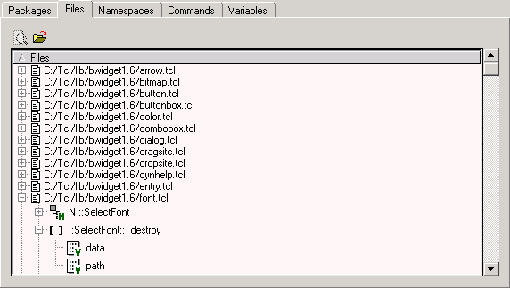
The icon denotes a file component.
To filter files:
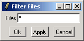
Use the Open button to view details on a particular file. This button opens the selected file in a code editor. See Jumping to the File Source Code for more information.
Alternatively, drill down into a file list, using the expanding and collapsing tree nodes, to display the packages, namespaces, commands, and variables used in a particular file. Using the Open button with one of these components invokes an XRef Component Explorer window specific to that code component. For example, opening a variable component launches an XRef Variable Explorer. To open the details of one of these components, see:
To jump to the file's source code:
The Namespaces tab alphabetically displays all namespaces used and defined within the scanned Tcl source code. The #Definitions and #Uses columns display the number of times each namespace is used within the scanned Tcl source code. Click a column title to sort namespace content in ascending or descending order. The current sort column selected is shaded pink.
Initially, the Cross Reference Tool explorer only displays the global namespace '::' in the component display. The global namespace is the parent node of all namespaces organized within a collapsible tree. Expand the global node to view all namespaces under the parent namespace. Further expand a particular namespace node to view all commands and variables nested within the scope of that namespace.
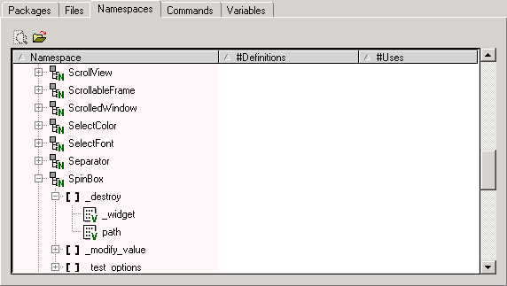
The icon denotes a namespace component.
To filter namespaces:
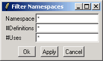
Use the Open button to view details on a particular namespace, such as the name of the file where the namespace exists. Opening namespace details invokes an XRef Namespace Explorer window, which displays lower-level code details specific to the namespace selected. To open a namespace's details in an XRef Namespace Explorer window:
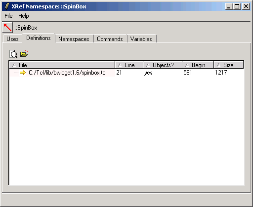
The XRef Namespace Explorer displays the namespaces, commands, and variables that are within the scope of the selected namespace component. These components are accessible though toggling these component tabs. The Uses and Definition tabs list the files that are within the scope of this namespace. Both the Uses and Definitions tabs contain the following columns:
This combination of XRef Namespace Explorer tabs and columns are useful for obtaining very low-level details on the components within the selected namespace.
It is possible to invoke numerous XRef Namespace Explorers while inspecting the scanned database. To continue exploring namespace component details, click the Open button once again. The total number of XRef Namespace Explorers that can be invoked depends on the structure and contents of your Tcl source code.
Alternatively, drill down into a namespace list, using the expanding and collapsing tree nodes, to display the commands and variables within the scope of a particular namespace. Using the Open button with one of these components invokes an XRef Component Explorer window specific to that code component. To open the details of one of these components, see:
Use the Show parent namespace button to invoke an XRef Namespace Explorer that displays the parent namespace of the current namespace. To view the parent namespace of the current namespace:
Note: The global namespace '::' does not have a parent.
At some point when invoking multiple XRef Namespace Explorers, the lowest level of code is reached. At this point, you can jump to the actual source file where the namespace either used or defined. To jump to the source file:
The Commands tab alphabetically displays all commands used and defined within the scanned Tcl source code. The #Definitions and #Uses columns display the number of times each command is used within the scanned Tcl source code. Click a column title to sort command content in ascending or descending order. The current sort column selected is shaded pink.
Commands are presented in a collapsible tree that can be expanded to drill down into the variables used and defined within a particular command.
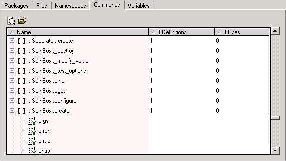
The  icon denotes a
command component.
icon denotes a
command component.
To filter commands:

Use the Open button to view details on a particular command, such as the variables used within the command. Opening a command's details invokes an XRef Command Explorer window, which displays lower-level code details specific to the command selected. To open command details in an XRef Command Explorer window:
Alternatively, drill down into a command list, using the expanding and collapsing tree nodes, to display the variables defined and used within a particular command. See, Opening Variable Details for more information.
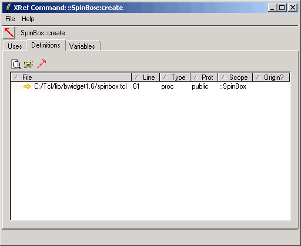
The XRef Command Explorer displays the variables that are used and defined within the selected command component. Variable components are accessible though toggling to the Variable tab. Toggle between the Uses and Definitions tabs to view what files are used and where those files are defined. The Definitions tab contains the following columns:
This combination of XRef Command Explorer tabs and columns is useful for obtaining low-level details on the components within the selected command. It is possible to invoke numerous XRef Command Explorers while inspecting the scanned database. To continue exploring command component details, click the Open button once again. The total number of XRef Command Explorers that can be invoked depends on the structure and contents of your Tcl source code.
Use the Show execution namespace button to invoke an XRef Command Explorer, which displays the parent namespace of the current command. To view the parent namespace of the current command:
Note: The global namespace '::' does not have a parent.
Use the Show origin button to show the origin of the command.
At some point when invoking multiple XRef Command Explorers, the lowest level of code is reached. At this point, you can jump to the actual source file where the command is declared. To jump to the source file:
The Variable tab alphabetically lists all variables used and defined within the scanned Tcl source code. The #Definitions and #Uses columns display the number of times each variable is used. This tab provides the lowest-level view of the database. For this reason, variables are presented in a flat list and cannot be expanded for drilling further down into the code.
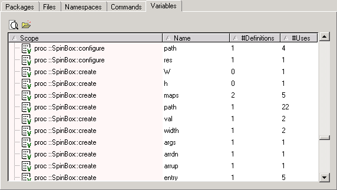
The icon denotes a variable component.
To filter variables:
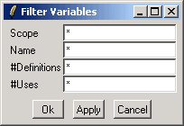
Use the Open button to view details on a particular variable, such as the files containing the variable definitions. Opening a variable's details invokes an XRef Variable Explorer window, which displays lower-level code details specific to the variable selected. To open a variable's details in an XRef Variable Explorer window:
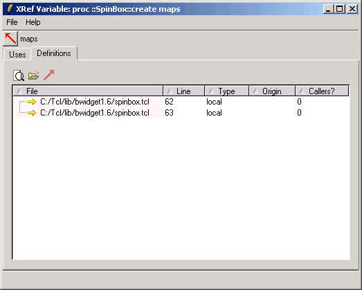
The XRef Variable Explorer displays the files where the selected variable is used and defined. Toggle between the Uses and Definitions tabs to view the all the files where the variable is used and defined. The Definitions tab contains the following columns:
[upvar].Use the Show defining scope button to invoke an XRef Variable Explorer, which displays the namespace or procedure the variable is defined in. To view the namespace or procedure scope of the variable:
Note: The global namespace '::' does not have a parent.
Use the Show origin button to show the origin of the variable.
To jump to a variable's source code:
The Cross Reference Tool builds component databases by scanning the Tcl source contained in the specified input. Use File | Save to store the extracted component information in a database. Cross Reference Tool database files have a ".txr" extension. There are two approaches to building a database for use with the XRef tool. These include:
The XRef Tool can extract Tcl program component information from various Tcl source files. On the command-line, specify the input as follows:
Windows
tclxref.exe -scan dbfile.txr file1.tcl file2.tcl ...dbfile is the name of the database file used to store the
extracted component information.Unix
tclxref -scan dbfile.txr file1.tcl file2.tcl ...dbfile is the name of the database file used to store the
extracted component information.The Cross Reference Tool can extract program component information from programs and packages contained in TclApp (or Prowrap) projects, Tcl Dev Kit Package definitions (".tap" files), and from Komodo project files. Use the Windows File Menu, command line, or the Unix shell prompt as follows:
Windows
File Menu:
Command Line:
tclxref.exe -tpj tclapp.tpjtclxref.exe -tap package.taptclxref.exe -teapot teapot.txttclxref.exe -komodo project.kpfUnix
Shell Prompt:
tclxref -tpj tclapp.tpjtclxref -tap package.taptclxref -teapot teapot.txttclxref -komodo project.kpfUse the following commands to load a database file into an XRef explorer window. XRef tool database files have a ".txr" extension.
Windows
tclxref.exe -gui dbfiledbfile is the name of the database file used to store the
extracted component information.Unix
tclxref -gui dbfile.txrdbfile is the name of the database file used to store the
extracted component information.To open a database file in a new XRef explorer window:
Windows
To close a Tcl database file:
Windows